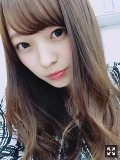
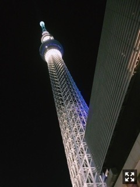
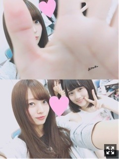

冬がすき。 梅澤美波
みなさまこんにちは！！
乃木坂46 ３期生の
梅澤美波です。

プリンシパル稽古のとき
いい寒さですね〜
私寒いの大好きです
というか冬が好きです☺︎
外に出ると、
いい寒さだな〜って感じます
終わって欲しくないな〜
冬服が好き
空気が好き
今日の寒さだいすき！！
今日からセンター試験ですね！！
受験生の皆さん、頑張ってください。
私は高校受験しか経験していないけど、
少しでも皆様に元気や勇気を与えられたら嬉しいです。
合格できるよう、心から願っています。
落ち着いて、絶対できます！！
体調には気をつけて、寒いので温めてくださいね（ ｉ _ ｉ ）
あとから読み返したら
見にくかったかな（ ｉ _ ｉ ）
お読みくださった方
ありがとうございます。
今日も長いかも〜（ ｉ _ ｉ ）
18歳になりました〜☺︎
誕生日の日に乃木神社に
行かせていただいたり
プレゼントくれたり、
連絡くれたり、嬉しかった。だいすき！！
家族もお祝いしてくれました☺︎
やっぱり私の趣味分かってて
本当に嬉しかった。
母のご飯もめちゃくちゃ美味しいんですよ〜( ¨̮ )
プリンシパルの稽古中にも
ケーキをいただいてたくさんの方がお祝いしてくれました
本当に嬉しすぎました（ ｉ _ ｉ ）
私の誕生日書いてくださっていた。
ありがとうございます（ ｉ _ ｉ ）
本当に嬉しい。
幸せ者〜！！！！
６日は誰よりも幸せだった自信ある！！
(負けないよって方挙手！！)（笑）
18歳、なにか自慢できるものができたらいいなって思ってます
強みを見つけられるように、頑張ります
好きなものを紹介します
私はアイドルさんがすきです！
意外！ってめちゃくちゃ言われます（笑）
乃木坂46は、3期生になる前は
握手会などにも参加していたし、
姉も好きなのでよく一緒に
テレビ見たりとかしてました( ¨̮ )
元々雑誌から憧れていた鈴木愛理さんのいる
℃－uteさんだったり、
パフォーマンスと曲が
めちゃくちゃ大好きなGEMさんだったり、
欅坂46さんも曲が私のドツボで
衣装もダンスもかっこよくて大好きだし、
わーすたさんもカワイイが詰まってるし、
NMBさんのダンスのキレと曲が大好きだし、、
かわいいって、正義◎
おすすめのアイドルさんいたら
教えてください( ¨̮ )
みなさんと共有したい
歌って踊っている姿を見るのが
勉強にもなってとても好きです。
ほかのアーティストさんもめちゃくちゃ聞きますよ〜☺︎
コメント返し第2弾！！ででん
question〜
Q.得意料理は？
A.リゾット！！ハンバーグ、カレーとか！（笑）あと、じゃがいも系は得意です〜。結構料理したりしてました☺︎
Q.好きな場所は？
A.夜空が見えるあまり電灯のない公園！身近な所だと、お風呂ですかね〜。お風呂大好きで２時間とか普通に半身浴してます（笑）半身浴しながらコメントみたり☺︎
Q.同性ファンどう思う？
A.すっごく嬉しい！！本当に嬉しい！！服のお話とかメイクのお話とかたくさんしたいな〜って思います( ¨̮ )
Q.マイルールはありますか？
A.自分ルール、めちゃくちゃあります！ありすぎてしんどくなるくらい( .. )（笑）
少ないけど今回はここまで！！
また次回〜☺︎
前回も、
コメントたくさんありがとうございました！
読むの本当に楽しいんだ〜( ¨̮ )
自分の近況報告だったり、
最近の出来事だったり、
コメントしてくれる方もたくさんいて、
皆もこうやって頑張ってるんだな
って
少しでも力になれたらいいな〜なんて
皆が頑張ってるから頑張れる！！
一緒にがんばりましょう☺︎
女の子も多くて嬉しい☺︎
前回コメントしてくださる方の名前を見つけると、あっ！ってなる( ¨̮ )
はやく握手会したいな〜〜
この間家族で都内に行きました〜
スカイツリー！！！
真下に行ったの初めて

でもでも私は東京タワー派( ¨̮ )
（笑）（笑）
どっちもすきですが
あ、鍋パーティー第2弾とお泊まり
昨日しましたよ〜
すっごく楽しかった
写真はまた今度載せます◎

写真撮ろうとしたらあやに隠されたの図。
み〜づき〜
めちゃくちゃ美少女なんだけど
変なところもあったり、私のツボですこの子。めちゃくちゃ面白い。
笑い方がすき☺︎
よく食べるとこもかわいくてすき☺︎
皆様からいただいたファンレターを
読み返しています
元気の源です。
この人達のために頑張ろうって
思えます。
ありがとう
ぽーい
誕生日の12時まわってすぐに
ももっぴが電話くれて
"だいすき"
って言われてきゅん♡♡としました。
かわいいかよ〜( .. )( .. )だいすき〜
そんなももっぴの担当は明日ですお楽しみにっっ
ほんじゃあね〜
プリンシパル稽古、
頑張ってます
舞台に立つ姿をお見せできるよう
頑張ります
Original：https://www.nogizaka46.com/s/n46/diary/detail/36502?ima=0535&cd=MEMBER